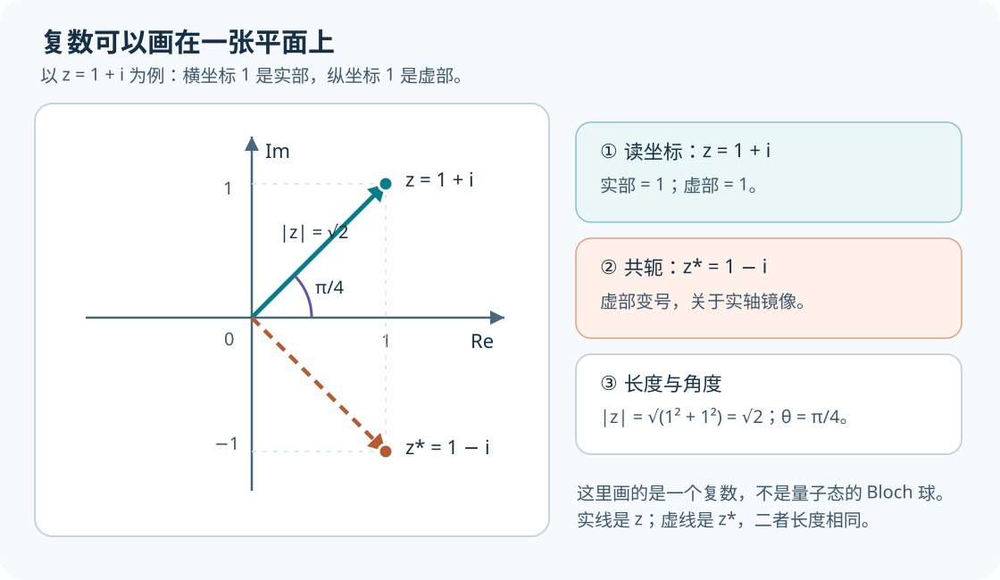
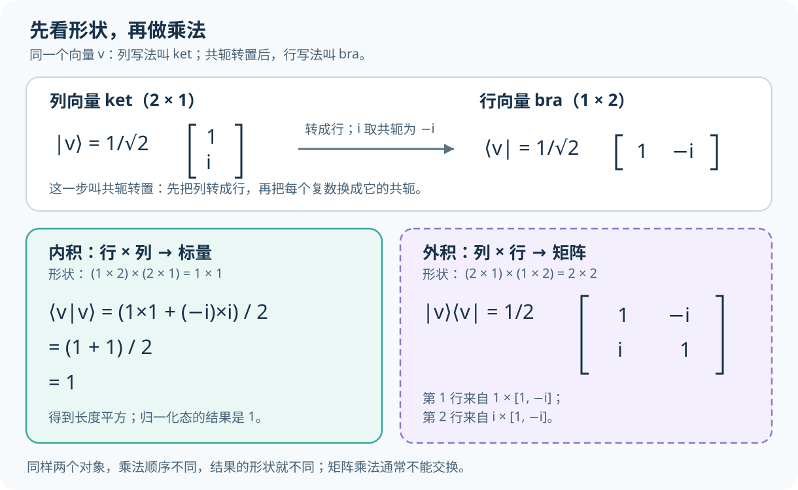

01｜够用而不跳步的数学工具
本章只引入后续会直接使用的数学。每遇到一个新符号，先问它是数、向量还是矩阵，再看它有几个分量、怎样计算、结果又是什么。目标不是背公式，而是能自己检查维度、归一化与每一步变换。
如果已有几年没碰数学，不必一次读完。要进入第 02 章的单比特态与门 ，先读本章第 1–4 节和第 8 节的普通概率部分，边读边做小核对。读到第 02 章后面使用本征值、外积和迹的段落时，再回本章读第 5–6 节；进入第 03 章的双比特与纠缠 前，再补第 7 节的张量积。第 9 节的复杂度术语可留给算法篇。标着“进阶回看”的证明不是单比特入门的门槛；读本章不需要微积分。
先记住三件熟悉的事：概率在 0 0 0 1 1 1 1 1 1 1 / 4 1/4 1/4 100 100 100 理论上的平均成功次数 为 100 × ( 1 / 4 ) = 25 100\times(1/4)=25 100 × ( 1/4 ) = 25
1. 复数：相位从这里进入
量子态的振幅可以是复数。先不要急着记指数形式：会把复数相加、相乘、求长度，才看得清后来为什么要取“模平方”。
从 i i i
实数中没有哪个数平方后等于 − 1 -1 − 1 i i i i 2 = − 1 i^2=-1 i 2 = − 1
z = a + b i , z=a+bi, z = a + bi , 其中 a , b a,b a , b a a a b b b b b b b i bi bi 3 − 2 i 3-2i 3 − 2 i 3 3 3 − 2 -2 − 2 b = 0 b=0 b = 0
加减法分别处理两个分量：
( 1 + 2 i ) + ( 3 − i ) = ( 1 + 3 ) + ( 2 − 1 ) i = 4 + i .
(1+2i)+(3-i)=(1+3)+(2-1)i=4+i.
( 1 + 2 i ) + ( 3 − i ) = ( 1 + 3 ) + ( 2 − 1 ) i = 4 + i . 减法也逐项做，但要把后一个括号整体减去：( 1 + 2 i ) − ( 3 − i ) = 1 + 2 i − 3 + i = − 2 + 3 i (1+2i)-(3-i)=1+2i-3+i=-2+3i ( 1 + 2 i ) − ( 3 − i ) = 1 + 2 i − 3 + i = − 2 + 3 i
乘法仍用分配律，遇到 i 2 i^2 i 2 − 1 -1 − 1
( 1 + 2 i ) ( 3 − i ) = 3 − i + 6 i − 2 i 2 = 3 + 5 i + 2 = 5 + 5 i .
\begin{aligned}
(1+2i)(3-i)
&=3-i+6i-2i^2\\
&=3+5i+2=5+5i.
\end{aligned}
( 1 + 2 i ) ( 3 − i ) = 3 − i + 6 i − 2 i 2 = 3 + 5 i + 2 = 5 + 5 i . 一个很有用的搭档是共轭 。把虚部的符号翻转，便得到 z = a + b i z=a+bi z = a + bi z ∗ = a − b i z^*=a-bi z ∗ = a − bi i i i
z ∗ z = ( a − b i ) ( a + b i ) = a 2 − b 2 i 2 = a 2 + b 2 .
z^*z=(a-bi)(a+bi)=a^2-b^2i^2=a^2+b^2.
z ∗ z = ( a − bi ) ( a + bi ) = a 2 − b 2 i 2 = a 2 + b 2 . 结果是非负实数。这也解释了为何复数除法常要用共轭把分母变成实数。例如
1 1 + i = 1 − i ( 1 + i ) ( 1 − i ) = 1 − i 1 − i 2 = 1 − i 2 .
\frac1{1+i}
=\frac{1-i}{(1+i)(1-i)}
=\frac{1-i}{1-i^2}
=\frac{1-i}{2}.
1 + i 1 = ( 1 + i ) ( 1 − i ) 1 − i = 1 − i 2 1 − i = 2 1 − i . 第二步是在分子、分母同乘 1 − i 1-i 1 − i
模是长度，相位是方向
把 a + b i a+bi a + bi ( a , b ) (a,b) ( a , b ) 模 ，记作 ∣ z ∣ |z| ∣ z ∣
∣ z ∣ = a 2 + b 2 , ∣ z ∣ 2 = a 2 + b 2 = z ∗ z .
|z|=\sqrt{a^2+b^2},\qquad |z|^2=a^2+b^2=z^*z.
∣ z ∣ = a 2 + b 2 , ∣ z ∣ 2 = a 2 + b 2 = z ∗ z . 例如 z = 1 + i z=1+i z = 1 + i ( 1 , 1 ) (1,1) ( 1 , 1 ) ∣ 1 + i ∣ = 1 2 + 1 2 = 2 |1+i|=\sqrt{1^2+1^2}=\sqrt2 ∣1 + i ∣ = 1 2 + 1 2 = 2 2 \sqrt2 2 2 2 2
从正实轴逆时针转到点 ( a , b ) (a,b) ( a , b ) 相位 ，记作 θ \theta θ π \pi π 180 ∘ 180^\circ 18 0 ∘ π / 2 \pi/2 π /2 π / 4 \pi/4 π /4 45 ∘ 45^\circ 4 5 ∘ r = ∣ z ∣ > 0 r=|z|>0 r = ∣ z ∣ > 0 r r r cos θ \cos\theta cos θ r r r sin θ \sin\theta sin θ
a = r cos θ , b = r sin θ . a=r\cos\theta,\qquad b=r\sin\theta. a = r cos θ , b = r sin θ . 
打开原尺寸图 ↗
图中上方的 1 + i 1+i 1 + i 1 − i 1-i 1 − i 复数 ，并非后文表示单量子比特态的 Bloch 球。
因此同一个复数也可写成
z = r ( cos θ + i sin θ ) . z=r(\cos\theta+i\sin\theta). z = r ( cos θ + i sin θ ) . 还是用 1 + i 1+i 1 + i θ = π / 4 \theta=\pi/4 θ = π /4 r = 2 r=\sqrt2 r = 2 2 cos ( π / 4 ) = 1 \sqrt2\cos(\pi/4)=1 2 cos ( π /4 ) = 1 2 sin ( π / 4 ) = 1 \sqrt2\sin(\pi/4)=1 2 sin ( π /4 ) = 1 1 + i 1+i 1 + i tan θ = b / a \tan\theta=b/a tan θ = b / a − 1 + i -1+i − 1 + i 3 π / 4 3\pi/4 3 π /4 − π / 4 -\pi/4 − π /4
绕一整圈回到同一点，所以 θ \theta θ θ + 2 π k \theta+2\pi k θ + 2 πk k k k z = 0 z=0 z = 0
Euler 公式 给上述括号一个紧凑写法：
e i θ = cos θ + i sin θ , z = r e i θ . e^{i\theta}=\cos\theta+i\sin\theta,\qquad z=re^{i\theta}. e i θ = cos θ + i sin θ , z = r e i θ . 这里 e e e 2.718 2.718 2.718 e i θ e^{i\theta} e i θ θ \theta θ 1 + i = 2 e i π / 4 1+i=\sqrt2e^{i\pi/4} 1 + i = 2 e iπ /4
( r 1 e i θ 1 ) ( r 2 e i θ 2 ) = r 1 r 2 e i ( θ 1 + θ 2 ) .
(r_1e^{i\theta_1})(r_2e^{i\theta_2})
=r_1r_2e^{i(\theta_1+\theta_2)}.
( r 1 e i θ 1 ) ( r 2 e i θ 2 ) = r 1 r 2 e i ( θ 1 + θ 2 ) . 拿 ( 1 + i ) ( 1 − i ) = 2 (1+i)(1-i)=2 ( 1 + i ) ( 1 − i ) = 2 2 \sqrt2 2 2 2 2 π / 4 \pi/4 π /4 − π / 4 -\pi/4 − π /4 0 0 0 e i ϕ e^{i\phi} e i ϕ ∣ e i ϕ ∣ = 1 |e^{i\phi}|=1 ∣ e i ϕ ∣ = 1
算例：从振幅到概率
设两个测量结果的振幅分别为 α = ( 1 + i ) / 2 \alpha=(1+i)/2 α = ( 1 + i ) /2 β = ( 1 − i ) / 2 \beta=(1-i)/2 β = ( 1 − i ) /2
∣ α ∣ 2 = α ∗ α = 1 − i 2 1 + i 2 = 1 − i 2 4 = 1 2 .
|\alpha|^2=\alpha^*\alpha
=\frac{1-i}{2}\frac{1+i}{2}
=\frac{1-i^2}{4}=\frac12.
∣ α ∣ 2 = α ∗ α = 2 1 − i 2 1 + i = 4 1 − i 2 = 2 1 . 同样，∣ β ∣ 2 = ( ( 1 + i ) ( 1 − i ) ) / 4 = 1 / 2 |\beta|^2=((1+i)(1-i))/4=1/2 ∣ β ∣ 2 = (( 1 + i ) ( 1 − i )) /4 = 1/2 1 1 1 α 2 = i / 2 \alpha^2=i/2 α 2 = i /2 “概率等于对应振幅的模平方”是量子测量的物理规则 ，不是单靠复数运算推出来的定理；这里先练习按规则计算。两个不同相位的振幅可以有相同的模平方，但相位在后续干涉中仍可能起作用。
马上核对。 ( 2 − i ) ( 2 + i ) (2-i)(2+i) ( 2 − i ) ( 2 + i ) ∣ 3 − 4 i ∣ 2 |3-4i|^2 ∣3 − 4 i ∣ 2 4 − i 2 = 5 4-i^2=5 4 − i 2 = 5 3 2 + ( − 4 ) 2 = 25 3^2+(-4)^2=25 3 2 + ( − 4 ) 2 = 25
2. 向量、bra 与 ket
两个数竖着排成一列就是二维列向量 。先不用量子术语：如果 p = [ 1 , i ] T p=[1,i]^T p = [ 1 , i ] T q = [ 2 , − i ] T q=[2,-i]^T q = [ 2 , − i ] T T T T
p + q = [ 1 + 2 i − i ] = [ 3 0 ] , 2 p = [ 2 2 i ] .
p+q=\begin{bmatrix}1+2\\i-i\end{bmatrix}
=\begin{bmatrix}3\\0\end{bmatrix},\qquad
2p=\begin{bmatrix}2\\2i\end{bmatrix}.
p + q = [ 1 + 2 i − i ] = [ 3 0 ] , 2 p = [ 2 2 i ] . 结果仍是两分量列向量，不能把不同位置随意合并。下面的 α , β \alpha,\beta α , β C 2 \mathbb C^2 C 2
列向量
∣ ψ ⟩ = [ α β ] |\psi\rangle=\begin{bmatrix}\alpha\\\beta\end{bmatrix} ∣ ψ ⟩ = [ α β ] 在量子计算里称为 ket ，用来写态 ψ \psi ψ 2 × 1 2\times1 2 × 1 共轭转置
⟨ ψ ∣ = [ α ∗ β ∗ ] \langle\psi|=\begin{bmatrix}\alpha^*&\beta^*\end{bmatrix} ⟨ ψ ∣ = [ α ∗ β ∗ ] 这个行向量称为 bra ，尺寸是 1 × 2 1\times2 1 × 2 † \dagger † ⟨ ψ ∣ = ( ∣ ψ ⟩ ) † \langle\psi|=(|\psi\rangle)^\dagger ⟨ ψ ∣ = ( ∣ ψ ⟩ ) † T T T i i i − i -i − i ∣ p ⟩ = [ 1 , i ] T |p\rangle=[1,i]^T ∣ p ⟩ = [ 1 , i ] T ⟨ p ∣ = [ 1 , − i ] \langle p|=[1,-i] ⟨ p ∣ = [ 1 , − i ] [ 1 , i ] [1,i] [ 1 , i ]
行乘列得到一个数：把对应位置相乘再相加。若 ∣ ϕ ⟩ = [ γ , δ ] T |\phi\rangle=[\gamma,\delta]^T ∣ ϕ ⟩ = [ γ , δ ] T
⟨ ψ ∣ ϕ ⟩ = [ α ∗ β ∗ ] [ γ δ ] = α ∗ γ + β ∗ δ .
\langle\psi|\phi\rangle
=\begin{bmatrix}\alpha^*&\beta^*\end{bmatrix}
\begin{bmatrix}\gamma\\\delta\end{bmatrix}
=\alpha^*\gamma+\beta^*\delta.
⟨ ψ ∣ ϕ ⟩ = [ α ∗ β ∗ ] [ γ δ ] = α ∗ γ + β ∗ δ . 这个数称为内积 ；对于更多分量，规则仍是“左边共轭、同位置相乘、最后相加”：
⟨ ϕ ∣ ψ ⟩ = ∑ j ϕ j ∗ ψ j . \langle\phi|\psi\rangle=\sum_j\phi_j^*\psi_j. ⟨ ϕ ∣ ψ ⟩ = j ∑ ϕ j ∗ ψ j . 求和符号 ∑ j \sum_j ∑ j j j j

打开原尺寸图 ↗
先看图左半：1 × 2 1\times2 1 × 2 2 × 1 2\times1 2 × 1 1 × 1 1\times1 1 × 1 2 × 2 2\times2 2 × 2 外积 。两种次序不能互换。
向量与自身的内积是各分量的模平方之和；它的平方根叫范数 或长度：
∥ ψ ∥ = ⟨ ψ ∣ ψ ⟩ . \|\psi\|=\sqrt{\langle\psi|\psi\rangle}. ∥ ψ ∥ = ⟨ ψ ∣ ψ ⟩ . 例如 ⟨ p ∣ p ⟩ = 1 ⋅ 1 + ( − i ) i = 2 \langle p|p\rangle=1\cdot1+(-i)i=2 ⟨ p ∣ p ⟩ = 1 ⋅ 1 + ( − i ) i = 2 ∥ p ∥ = 2 \|p\|=\sqrt2 ∥ p ∥ = 2 2 \sqrt2 2 [ 1 , i ] T / 2 [1,i]^T/\sqrt2 [ 1 , i ] T / 2
复数内积为什么要把左边的分量共轭？取两个归一化列向量
∣ u ⟩ = 1 2 [ 1 i ] , ∣ w ⟩ = 1 2 [ 1 − i ] .
|u\rangle=\frac1{\sqrt2}\begin{bmatrix}1\\i\end{bmatrix},
\qquad
|w\rangle=\frac1{\sqrt2}\begin{bmatrix}1\\-i\end{bmatrix}.
∣ u ⟩ = 2 1 [ 1 i ] , ∣ w ⟩ = 2 1 [ 1 − i ] . 因为 i ∗ = − i i^*=-i i ∗ = − i
⟨ u ∣ w ⟩ = 1 + ( − i ) ( − i ) 2 = 0 , ⟨ u ∣ u ⟩ = 1 + ( − i ) i 2 = 1.
\langle u|w\rangle
=\frac{1+(-i)(-i)}2=0,
\qquad
\langle u|u\rangle
=\frac{1+(-i)i}2=1.
⟨ u ∣ w ⟩ = 2 1 + ( − i ) ( − i ) = 0 , ⟨ u ∣ u ⟩ = 2 1 + ( − i ) i = 1. 若省掉共轭，向量与自身相乘便不再保证得到非负实数，不能用来表示长度平方。
算例：归一化
给定 ∣ s ⟩ = [ 1 , 1 + i ] T |s\rangle=[1,1+i]^T ∣ s ⟩ = [ 1 , 1 + i ] T
⟨ s ∣ s ⟩ = 1 + ∣ 1 + i ∣ 2 = 1 + 2 = 3. \langle s|s\rangle=1+|1+i|^2=1+2=3. ⟨ s ∣ s ⟩ = 1 + ∣1 + i ∣ 2 = 1 + 2 = 3. 因此归一化态是
∣ ψ ⟩ = 1 3 [ 1 1 + i ] . |\psi\rangle=\frac1{\sqrt3}\begin{bmatrix}1\\1+i\end{bmatrix}. ∣ ψ ⟩ = 3 1 [ 1 1 + i ] . 进阶回看：后文用到的一个内积不等式
第一次阅读可以先记住结论 ∣ ⟨ u ∣ v ⟩ ∣ ≤ ∥ u ∥ ∥ v ∥ |\langle u|v\rangle|\le\|u\|\|v\| ∣ ⟨ u ∣ v ⟩ ∣ ≤ ∥ u ∥∥ v ∥
对非零向量 ∣ u ⟩ |u\rangle ∣ u ⟩ ∣ v ⟩ |v\rangle ∣ v ⟩ ∣ v ⟩ |v\rangle ∣ v ⟩ ∣ u ⟩ |u\rangle ∣ u ⟩
∣ w ⟩ = ∣ v ⟩ − ⟨ u ∣ v ⟩ ⟨ u ∣ u ⟩ ∣ u ⟩ .
|w\rangle=|v\rangle-
\frac{\langle u|v\rangle}{\langle u|u\rangle}|u\rangle.
∣ w ⟩ = ∣ v ⟩ − ⟨ u ∣ u ⟩ ⟨ u ∣ v ⟩ ∣ u ⟩ . 直接计算 ⟨ u ∣ w ⟩ = ⟨ u ∣ v ⟩ − ⟨ u ∣ v ⟩ = 0 \langle u|w\rangle=\langle u|v\rangle-\langle u|v\rangle=0 ⟨ u ∣ w ⟩ = ⟨ u ∣ v ⟩ − ⟨ u ∣ v ⟩ = 0 ∣ w ⟩ |w\rangle ∣ w ⟩ ∣ u ⟩ |u\rangle ∣ u ⟩ c = ⟨ u ∣ v ⟩ / ⟨ u ∣ u ⟩ c=\langle u|v\rangle/\langle u|u\rangle c = ⟨ u ∣ v ⟩ / ⟨ u ∣ u ⟩ ∣ w ⟩ = ∣ v ⟩ − c ∣ u ⟩ |w\rangle=|v\rangle-c|u\rangle ∣ w ⟩ = ∣ v ⟩ − c ∣ u ⟩
⟨ w ∣ w ⟩ = ⟨ v ∣ v ⟩ − c ⟨ v ∣ u ⟩ − c ∗ ⟨ u ∣ v ⟩ + ∣ c ∣ 2 ⟨ u ∣ u ⟩ = ⟨ v ∣ v ⟩ − ∣ ⟨ u ∣ v ⟩ ∣ 2 ⟨ u ∣ u ⟩ .
\begin{aligned}
\langle w|w\rangle
&=\langle v|v\rangle-c\langle v|u\rangle
-c^*\langle u|v\rangle+|c|^2\langle u|u\rangle\\
&=\langle v|v\rangle-
\frac{|\langle u|v\rangle|^2}{\langle u|u\rangle}.
\end{aligned}
⟨ w ∣ w ⟩ = ⟨ v ∣ v ⟩ − c ⟨ v ∣ u ⟩ − c ∗ ⟨ u ∣ v ⟩ + ∣ c ∣ 2 ⟨ u ∣ u ⟩ = ⟨ v ∣ v ⟩ − ⟨ u ∣ u ⟩ ∣ ⟨ u ∣ v ⟩ ∣ 2 . 第二行用到了 ⟨ v ∣ u ⟩ = ⟨ u ∣ v ⟩ ∗ \langle v|u\rangle=\langle u|v\rangle^* ⟨ v ∣ u ⟩ = ⟨ u ∣ v ⟩ ∗
0 ≤ ⟨ w ∣ w ⟩ = ⟨ v ∣ v ⟩ − ∣ ⟨ u ∣ v ⟩ ∣ 2 ⟨ u ∣ u ⟩ .
0\le\langle w|w\rangle
=\langle v|v\rangle-
\frac{|\langle u|v\rangle|^2}{\langle u|u\rangle}.
0 ≤ ⟨ w ∣ w ⟩ = ⟨ v ∣ v ⟩ − ⟨ u ∣ u ⟩ ∣ ⟨ u ∣ v ⟩ ∣ 2 . 移项后得到 Cauchy–Schwarz 不等式
∣ ⟨ u ∣ v ⟩ ∣ 2 ≤ ⟨ u ∣ u ⟩ ⟨ v ∣ v ⟩ .
|\langle u|v\rangle|^2
\le\langle u|u\rangle\langle v|v\rangle.
∣ ⟨ u ∣ v ⟩ ∣ 2 ≤ ⟨ u ∣ u ⟩ ⟨ v ∣ v ⟩ . 它说内积的模不可能大于两个向量的长度乘积；Q2 的不确定关系 正从这一式出发。若 ∣ u ⟩ = 0 |u\rangle=0 ∣ u ⟩ = 0
全局相位不改变物理态
对任意实数 θ g \theta_{\rm g} θ g ∣ ψ ⟩ |\psi\rangle ∣ ψ ⟩ e i θ g ∣ ψ ⟩ e^{i\theta_{\rm g}}|\psi\rangle e i θ g ∣ ψ ⟩ c c c e i θ g c e^{i\theta_{\rm g}}c e i θ g c
∣ e i θ g c ∣ 2 = ( e i θ g c ) ∗ ( e i θ g c ) = e − i θ g e i θ g c ∗ c = ∣ c ∣ 2 .
|e^{i\theta_{\rm g}}c|^2
=(e^{i\theta_{\rm g}}c)^*(e^{i\theta_{\rm g}}c)
=e^{-i\theta_{\rm g}}e^{i\theta_{\rm g}}c^*c=|c|^2.
∣ e i θ g c ∣ 2 = ( e i θ g c ) ∗ ( e i θ g c ) = e − i θ g e i θ g c ∗ c = ∣ c ∣ 2 . 这个结论不依赖选哪一组测量基，因为整个态的共同因子会同样乘到每个结果的振幅上。下一节会定义 ∣ + ⟩ , ∣ − ⟩ |+\rangle,|-\rangle ∣ + ⟩ , ∣ − ⟩ ∣ + ⟩ |+\rangle ∣ + ⟩ i ∣ + ⟩ i|+\rangle i ∣ + ⟩ ∣ + ⟩ |+\rangle ∣ + ⟩ ∣ − ⟩ |-\rangle ∣ − ⟩ 相对相位 ，可由第 02 章的 Hadamard 门实验区分。后文说“忽略全局相位”时，忽略的是整个态共同乘上的因子，不是随意删掉某个分量的相位。
3. 正交归一基与展开
“基”是一套足以拼出空间中任意向量的基本方向。二维向量 [ a , b ] T [a,b]^T [ a , b ] T
[ a b ] = a [ 1 0 ] + b [ 0 1 ] .
\begin{bmatrix}a\\b\end{bmatrix}
=a\begin{bmatrix}1\\0\end{bmatrix}
+b\begin{bmatrix}0\\1\end{bmatrix}.
[ a b ] = a [ 1 0 ] + b [ 0 1 ] . 因此 ∣ 0 ⟩ = [ 1 , 0 ] T |0\rangle=[1,0]^T ∣0 ⟩ = [ 1 , 0 ] T ∣ 1 ⟩ = [ 0 , 1 ] T |1\rangle=[0,1]^T ∣1 ⟩ = [ 0 , 1 ] T 计算基 ；数 a , b a,b a , b 正交 ；每个方向长度为 1，叫归一 。一组基同时具备这两点，就叫正交归一基。还须确认方向足够多，能拼出任意 向量：三维空间里只有两个正交单位向量，仍不是整个三维空间的一组基。
一组基 { ∣ e j ⟩ } \{|e_j\rangle\} { ∣ e j ⟩}
⟨ e j ∣ e k ⟩ = δ j k , \langle e_j|e_k\rangle=\delta_{jk}, ⟨ e j ∣ e k ⟩ = δ jk , 就称为正交归一基。这里 δ j k \delta_{jk} δ jk j = k j=k j = k j ≠ k j\ne k j = k
∣ ψ ⟩ = ∑ j c j ∣ e j ⟩ , c j = ⟨ e j ∣ ψ ⟩ . |\psi\rangle=\sum_j c_j|e_j\rangle,\qquad c_j=\langle e_j|\psi\rangle. ∣ ψ ⟩ = j ∑ c j ∣ e j ⟩ , c j = ⟨ e j ∣ ψ ⟩ . 后一式可自己推出：从展开式左边乘 ⟨ e k ∣ \langle e_k| ⟨ e k ∣ ⟨ e k ∣ ψ ⟩ = ∑ j c j ⟨ e k ∣ e j ⟩ \langle e_k|\psi\rangle=\sum_j c_j\langle e_k|e_j\rangle ⟨ e k ∣ ψ ⟩ = ∑ j c j ⟨ e k ∣ e j ⟩ j = k j=k j = k c k c_k c k
另一组常用的二维基为
∣ + ⟩ = ∣ 0 ⟩ + ∣ 1 ⟩ 2 , ∣ − ⟩ = ∣ 0 ⟩ − ∣ 1 ⟩ 2 . |+\rangle=\frac{|0\rangle+|1\rangle}{\sqrt2},\qquad
|-\rangle=\frac{|0\rangle-|1\rangle}{\sqrt2}. ∣ + ⟩ = 2 ∣0 ⟩ + ∣1 ⟩ , ∣ − ⟩ = 2 ∣0 ⟩ − ∣1 ⟩ . 两者范数都是 1，而且 ⟨ + ∣ − ⟩ = ( 1 − 1 ) / 2 = 0 \langle+|-\rangle=(1-1)/2=0 ⟨ + ∣ − ⟩ = ( 1 − 1 ) /2 = 0 ∣ 0 ⟩ |0\rangle ∣0 ⟩ ∣ 1 ⟩ |1\rangle ∣1 ⟩ ∣ 0 ⟩ |0\rangle ∣0 ⟩ ( 1 , 0 ) (1,0) ( 1 , 0 )
⟨ + ∣ 0 ⟩ = 1 2 , ⟨ − ∣ 0 ⟩ = 1 2 .
\langle+|0\rangle=\frac1{\sqrt2},\qquad
\langle-|0\rangle=\frac1{\sqrt2}.
⟨ + ∣0 ⟩ = 2 1 , ⟨ − ∣0 ⟩ = 2 1 . 由此还原
∣ 0 ⟩ = ∣ + ⟩ + ∣ − ⟩ 2 |0\rangle=\frac{|+\rangle+|-\rangle}{\sqrt2} ∣0 ⟩ = 2 ∣ + ⟩ + ∣ − ⟩ 可见“状态是什么”不等于“某个固定基里的坐标是什么”；改变基会改变坐标表示，不改变物理态。若按计算基测量 ∣ 0 ⟩ |0\rangle ∣0 ⟩ ( 1 , 0 ) (1,0) ( 1 , 0 ) ∣ + ⟩ , ∣ − ⟩ |+\rangle,|-\rangle ∣ + ⟩ , ∣ − ⟩ ( 1 / 2 , 1 / 2 ) (1/2,1/2) ( 1/2 , 1/2 )
再用一个含复数的态检查换基。对 ∣ ψ ⟩ = ( ∣ 0 ⟩ + i ∣ 1 ⟩ ) / 2 |\psi\rangle=(|0\rangle+i|1\rangle)/\sqrt2 ∣ ψ ⟩ = ( ∣0 ⟩ + i ∣1 ⟩) / 2
c + = ⟨ + ∣ ψ ⟩ = 1 + i 2 , c − = ⟨ − ∣ ψ ⟩ = 1 − i 2 .
c_+=\langle+|\psi\rangle=\frac{1+i}{2},\qquad
c_-=\langle-|\psi\rangle=\frac{1-i}{2}.
c + = ⟨ + ∣ ψ ⟩ = 2 1 + i , c − = ⟨ − ∣ ψ ⟩ = 2 1 − i . 它们的模平方各为 1 / 2 1/2 1/2 c + ∣ + ⟩ + c − ∣ − ⟩ c_+|+\rangle+c_-|-\rangle c + ∣ + ⟩ + c − ∣ − ⟩ ∣ 0 ⟩ |0\rangle ∣0 ⟩ ( c + + c − ) / 2 = 1 / 2 (c_++c_-)/\sqrt2=1/\sqrt2 ( c + + c − ) / 2 = 1/ 2 ∣ 1 ⟩ |1\rangle ∣1 ⟩ ( c + − c − ) / 2 = i / 2 (c_+-c_-)/\sqrt2=i/\sqrt2 ( c + − c − ) / 2 = i / 2 暂停算一格： ∣ 1 ⟩ |1\rangle ∣1 ⟩ ∣ + ⟩ , ∣ − ⟩ |+\rangle,|-\rangle ∣ + ⟩ , ∣ − ⟩ 1 / 2 , − 1 / 2 1/\sqrt2,-1/\sqrt2 1/ 2 , − 1/ 2
4. 矩阵与线性算符
矩阵可以看作一张按行列排列的数字表。一个 2 × 2 2\times2 2 × 2 2 × 1 2\times1 2 × 1 2 × 1 2\times1 2 × 1
[ a b c d ] [ x y ] = [ a x + b y c x + d y ] .
\begin{bmatrix}a&b\\c&d\end{bmatrix}
\begin{bmatrix}x\\y\end{bmatrix}
=\begin{bmatrix}ax+by\\cx+dy\end{bmatrix}.
[ a c b d ] [ x y ] = [ a x + b y c x + d y ] . 中间尺寸必须相同：m × n m\times n m × n n n n m m m
A = [ 1 2 0 1 ] , B = [ 0 1 1 0 ] ,
A=\begin{bmatrix}1&2\\0&1\end{bmatrix},\qquad
B=\begin{bmatrix}0&1\\1&0\end{bmatrix},
A = [ 1 0 2 1 ] , B = [ 0 1 1 0 ] , 则 A B AB A B 1 ⋅ 0 + 2 ⋅ 1 = 2 1\cdot0+2\cdot1=2 1 ⋅ 0 + 2 ⋅ 1 = 2
A B = [ 2 1 1 0 ] , B A = [ 0 1 1 2 ] .
AB=\begin{bmatrix}2&1\\1&0\end{bmatrix},\qquad
BA=\begin{bmatrix}0&1\\1&2\end{bmatrix}.
A B = [ 2 1 1 0 ] , B A = [ 0 1 1 2 ] . 两者不相同，所以矩阵一般不能交换顺序。对列向量，A B ∣ v ⟩ = A ( B ∣ v ⟩ ) AB|v\rangle=A(B|v\rangle) A B ∣ v ⟩ = A ( B ∣ v ⟩) 右边的 B B B 。
还要分清三个容易混淆的符号。M T M^T M T M ∗ M^* M ∗ M † = ( M ∗ ) T M^\dagger=(M^*)^T M † = ( M ∗ ) T
M = [ 1 i 0 2 ]
M=\begin{bmatrix}1&i\\0&2\end{bmatrix}
M = [ 1 0 i 2 ] 为例，三种结果分别是
M T = [ 1 0 i 2 ] , M ∗ = [ 1 − i 0 2 ] , M † = [ 1 0 − i 2 ] .
M^T=\begin{bmatrix}1&0\\i&2\end{bmatrix},\quad
M^*=\begin{bmatrix}1&-i\\0&2\end{bmatrix},\quad
M^\dagger=\begin{bmatrix}1&0\\-i&2\end{bmatrix}.
M T = [ 1 i 0 2 ] , M ∗ = [ 1 0 − i 2 ] , M † = [ 1 − i 0 2 ] . 单位矩阵 I = [ 1 0 0 1 ] I=\bigl[\begin{smallmatrix}1&0\\0&1\end{smallmatrix}\bigr] I = [ 1 0 0 1 ] I ∣ v ⟩ = ∣ v ⟩ I|v\rangle=|v\rangle I ∣ v ⟩ = ∣ v ⟩ A I = I A = A AI=IA=A A I = I A = A
先手算一次矩阵乘向量
第 02 章的 Hadamard 门是一个 2 × 2 2\times2 2 × 2
H = 1 2 [ 1 1 1 − 1 ] .
H=\frac1{\sqrt2}
\begin{bmatrix}1&1\\1&-1\end{bmatrix}.
H = 2 1 [ 1 1 1 − 1 ] . 对 ∣ 0 ⟩ = [ 1 , 0 ] T |0\rangle=[1,0]^T ∣0 ⟩ = [ 1 , 0 ] T ( 1 ⋅ 1 + 1 ⋅ 0 ) / 2 = 1 / 2 (1\cdot1+1\cdot0)/\sqrt2=1/\sqrt2 ( 1 ⋅ 1 + 1 ⋅ 0 ) / 2 = 1/ 2 ( 1 ⋅ 1 − 1 ⋅ 0 ) / 2 = 1 / 2 (1\cdot1-1\cdot0)/\sqrt2=1/\sqrt2 ( 1 ⋅ 1 − 1 ⋅ 0 ) / 2 = 1/ 2
H ∣ 0 ⟩ = 1 2 [ 1 1 ] = ∣ + ⟩ .
H|0\rangle
=\frac1{\sqrt2}\begin{bmatrix}1\\1\end{bmatrix}
=|+\rangle.
H ∣0 ⟩ = 2 1 [ 1 1 ] = ∣ + ⟩ . 矩阵有两行，输出便有两个分量；每个输出分量都是对应行与输入列逐项相乘后相加。
两矩阵相乘时也逐格这样做。H H H H † = H H^\dagger=H H † = H
H † H = H 2 = 1 2 [ 1 1 1 − 1 ] [ 1 1 1 − 1 ] = 1 2 [ 1 + 1 1 − 1 1 − 1 1 + 1 ] = [ 1 0 0 1 ] = I .
\begin{aligned}
H^\dagger H=H^2
&=\frac12
\begin{bmatrix}1&1\\1&-1\end{bmatrix}
\begin{bmatrix}1&1\\1&-1\end{bmatrix}\\
&=\frac12
\begin{bmatrix}1+1&1-1\\1-1&1+1\end{bmatrix}
=\begin{bmatrix}1&0\\0&1\end{bmatrix}=I.
\end{aligned}
H † H = H 2 = 2 1 [ 1 1 1 − 1 ] [ 1 1 1 − 1 ] = 2 1 [ 1 + 1 1 − 1 1 − 1 1 + 1 ] = [ 1 0 0 1 ] = I . 下面四种性质会在后文反复出现。第一次阅读先抓住前两行的作用；正半定与谱分解可在第 05 章需要密度矩阵时回看。
例如 P = [ 1 0 0 0 ] P=\bigl[\begin{smallmatrix}1&0\\0&0\end{smallmatrix}\bigr] P = [ 1 0 0 0 ] [ a , b ] T [a,b]^T [ a , b ] T [ a , 0 ] T [a,0]^T [ a , 0 ] T P 2 = P P^2=P P 2 = P ⟨ v ∣ A ∣ v ⟩ \langle v|A|v\rangle ⟨ v ∣ A ∣ v ⟩
暂停算一格。 求 H ∣ 1 ⟩ H|1\rangle H ∣1 ⟩ [ 0 , 1 ] T [0,1]^T [ 0 , 1 ] T H H H ( ∣ 0 ⟩ − ∣ 1 ⟩ ) / 2 = ∣ − ⟩ (|0\rangle-|1\rangle)/\sqrt2=|-\rangle ( ∣0 ⟩ − ∣1 ⟩) / 2 = ∣ − ⟩
为什么酉矩阵保持概率
若 ∣ ψ ′ ⟩ = U ∣ ψ ⟩ |\psi'\rangle=U|\psi\rangle ∣ ψ ′ ⟩ = U ∣ ψ ⟩ U † U = I U^\dagger U=I U † U = I
⟨ ψ ′ ∣ ψ ′ ⟩ = ⟨ ψ ∣ U † U ∣ ψ ⟩ = ⟨ ψ ∣ I ∣ ψ ⟩ = ⟨ ψ ∣ ψ ⟩ .
\langle\psi'|\psi'\rangle
=\langle\psi|U^\dagger U|\psi\rangle
=\langle\psi|I|\psi\rangle
=\langle\psi|\psi\rangle.
⟨ ψ ′ ∣ ψ ′ ⟩ = ⟨ ψ ∣ U † U ∣ ψ ⟩ = ⟨ ψ ∣ I ∣ ψ ⟩ = ⟨ ψ ∣ ψ ⟩ . 所以原来归一化的态（⟨ ψ ∣ ψ ⟩ = 1 \langle\psi|\psi\rangle=1 ⟨ ψ ∣ ψ ⟩ = 1
更一般地，两态的内积也不变：⟨ U ϕ ∣ U ψ ⟩ = ⟨ ϕ ∣ U † U ∣ ψ ⟩ = ⟨ ϕ ∣ ψ ⟩ \langle U\phi|U\psi\rangle=\langle\phi|U^\dagger U|\psi\rangle=\langle\phi|\psi\rangle ⟨ U ϕ ∣ U ψ ⟩ = ⟨ ϕ ∣ U † U ∣ ψ ⟩ = ⟨ ϕ ∣ ψ ⟩ U − 1 = U † U^{-1}=U^\dagger U − 1 = U † U U U 总概率不变不等于每个结果概率不变 ：H H H ∣ 0 ⟩ |0\rangle ∣0 ⟩ ∣ + ⟩ |+\rangle ∣ + ⟩ ( 1 , 0 ) (1,0) ( 1 , 0 ) ( 1 / 2 , 1 / 2 ) (1/2,1/2) ( 1/2 , 1/2 )
5. 本征值、本征向量与谱分解
某些向量经过矩阵作用后，结果仍是原向量的数倍（也可能反向）。若存在一个非零 向量 ∣ v ⟩ |v\rangle ∣ v ⟩
A ∣ v ⟩ = λ ∣ v ⟩ , A|v\rangle=\lambda|v\rangle, A ∣ v ⟩ = λ ∣ v ⟩ , 则 ∣ v ⟩ |v\rangle ∣ v ⟩ 本征向量 ，λ \lambda λ 本征值 ；线性代数教材也叫“特征向量”和“特征值”。必须排除零向量，因为 A 0 = λ 0 A0=\lambda0 A 0 = λ 0 λ \lambda λ − 1 -1 − 1
算例：Pauli X X X
X = [ 0 1 1 0 ] . X=\begin{bmatrix}0&1\\1&0\end{bmatrix}. X = [ 0 1 1 0 ] . 设非零 ∣ v ⟩ = [ x , y ] T |v\rangle=[x,y]^T ∣ v ⟩ = [ x , y ] T X ∣ v ⟩ = [ y , x ] T X|v\rangle=[y,x]^T X ∣ v ⟩ = [ y , x ] T [ λ x , λ y ] T [\lambda x,\lambda y]^T [ λ x , λ y ] T y = λ x y=\lambda x y = λ x x = λ y x=\lambda y x = λ y x = 0 x=0 x = 0 y = 0 y=0 y = 0 x ≠ 0 x\ne0 x = 0 x = λ 2 x x=\lambda^2x x = λ 2 x λ 2 = 1 \lambda^2=1 λ 2 = 1 λ = + 1 \lambda=+1 λ = + 1 − 1 -1 − 1
取 λ = + 1 \lambda=+1 λ = + 1 y = x y=x y = x ∣ + ⟩ = [ 1 , 1 ] T / 2 |+\rangle=[1,1]^T/\sqrt2 ∣ + ⟩ = [ 1 , 1 ] T / 2 λ = − 1 \lambda=-1 λ = − 1 y = − x y=-x y = − x ∣ − ⟩ = [ 1 , − 1 ] T / 2 |-\rangle=[1,-1]^T/\sqrt2 ∣ − ⟩ = [ 1 , − 1 ] T / 2 X ∣ + ⟩ = ∣ + ⟩ X|+\rangle=|+\rangle X ∣ + ⟩ = ∣ + ⟩ X ∣ − ⟩ = − ∣ − ⟩ X|-\rangle=-|-\rangle X ∣ − ⟩ = − ∣ − ⟩
先认识外积，再写谱分解
上面已经会算 bra 乘 ket：1 × 2 1\times2 1 × 2 2 × 1 2\times1 2 × 1 2 × 2 2\times2 2 × 2 外积 。逐格规则是
[ a b ] [ c ∗ d ∗ ] = [ a c ∗ a d ∗ b c ∗ b d ∗ ] .
\begin{bmatrix}a\\b\end{bmatrix}
\begin{bmatrix}c^*&d^*\end{bmatrix}
=\begin{bmatrix}ac^*&ad^*\\bc^*&bd^*\end{bmatrix}.
[ a b ] [ c ∗ d ∗ ] = [ a c ∗ b c ∗ a d ∗ b d ∗ ] . 例如 ∣ + ⟩ ⟨ + ∣ |+\rangle\langle+| ∣ + ⟩ ⟨ + ∣ ∣ − ⟩ ⟨ − ∣ |-\rangle\langle-| ∣ − ⟩ ⟨ − ∣
P + = 1 2 [ 1 1 1 1 ] , P − = 1 2 [ 1 − 1 − 1 1 ] .
P_+=\frac12\begin{bmatrix}1&1\\1&1\end{bmatrix},\qquad
P_-=\frac12\begin{bmatrix}1&-1\\-1&1\end{bmatrix}.
P + = 2 1 [ 1 1 1 1 ] , P − = 2 1 [ 1 − 1 − 1 1 ] . P + P_+ P + ∣ + ⟩ |+\rangle ∣ + ⟩ P + ∣ ψ ⟩ = ∣ + ⟩ ⟨ + ∣ ψ ⟩ P_+|\psi\rangle=|+\rangle\langle+|\psi\rangle P + ∣ ψ ⟩ = ∣ + ⟩ ⟨ + ∣ ψ ⟩ P + 2 = P + P_+^2=P_+ P + 2 = P +
X = ∣ + ⟩ ⟨ + ∣ − ∣ − ⟩ ⟨ − ∣ . X=|+\rangle\langle+|-|-\rangle\langle-|. X = ∣ + ⟩ ⟨ + ∣ − ∣ − ⟩ ⟨ − ∣. 确实是 1 2 [ 0 2 2 0 ] = [ 0 1 1 0 ] \tfrac12\bigl[\begin{smallmatrix}0&2\\2&0\end{smallmatrix}\bigr]=\bigl[\begin{smallmatrix}0&1\\1&0\end{smallmatrix}\bigr] 2 1 [ 0 2 2 0 ] = [ 0 1 1 0 ] X X X ∣ + ⟩ |+\rangle ∣ + ⟩ + 1 +1 + 1 ∣ − ⟩ |-\rangle ∣ − ⟩ − 1 -1 − 1
有限维厄米矩阵都可以选一组正交归一的本征向量 ∣ v j ⟩ |v_j\rangle ∣ v j ⟩
A = ∑ j λ j ∣ v j ⟩ ⟨ v j ∣ . A=\sum_j\lambda_j|v_j\rangle\langle v_j|. A = j ∑ λ j ∣ v j ⟩ ⟨ v j ∣. 这叫谱分解 ；X = P + − P − X=P_+-P_- X = P + − P − A A A ∣ 0 ⟩ |0\rangle ∣0 ⟩ X X X ∣ ⟨ + ∣ 0 ⟩ ∣ 2 = ∣ ⟨ − ∣ 0 ⟩ ∣ 2 = 1 / 2 |\langle+|0\rangle|^2=|\langle-|0\rangle|^2=1/2 ∣ ⟨ + ∣0 ⟩ ∣ 2 = ∣ ⟨ − ∣0 ⟩ ∣ 2 = 1/2 + 1 , − 1 +1,-1 + 1 , − 1
暂停算一格。 Z = [ 1 0 0 − 1 ] Z=\bigl[\begin{smallmatrix}1&0\\0&-1\end{smallmatrix}\bigr] Z = [ 1 0 0 − 1 ] Z ∣ 0 ⟩ = + ∣ 0 ⟩ Z|0\rangle=+|0\rangle Z ∣0 ⟩ = + ∣0 ⟩ Z ∣ 1 ⟩ = − ∣ 1 ⟩ Z|1\rangle=-|1\rangle Z ∣1 ⟩ = − ∣1 ⟩
6. 迹、密度矩阵与正半定：用到时回看
上一节已经把外积算成矩阵。迹 只做一件事：把方阵主对角线上的数相加。例如 [ a b c d ] \bigl[\begin{smallmatrix}a&b\\c&d\end{smallmatrix}\bigr] [ a c b d ] a + d a+d a + d Tr ( A ) = ∑ i A i i \operatorname{Tr}(A)=\sum_iA_{ii} Tr ( A ) = ∑ i A ii
以第 3 节的 ∣ ψ ⟩ = ( ∣ 0 ⟩ + i ∣ 1 ⟩ ) / 2 |\psi\rangle=(|0\rangle+i|1\rangle)/\sqrt2 ∣ ψ ⟩ = ( ∣0 ⟩ + i ∣1 ⟩) / 2 ⟨ ψ ∣ = [ 1 , − i ] / 2 \langle\psi|=[1,-i]/\sqrt2 ⟨ ψ ∣ = [ 1 , − i ] / 2 纯态密度矩阵
ρ = ∣ ψ ⟩ ⟨ ψ ∣ = 1 2 [ 1 i ] [ 1 − i ] = 1 2 [ 1 − i i 1 ] .
\rho=|\psi\rangle\langle\psi|
=\frac12\begin{bmatrix}1\\i\end{bmatrix}
\begin{bmatrix}1&-i\end{bmatrix}
=\frac12\begin{bmatrix}1&-i\\i&1\end{bmatrix}.
ρ = ∣ ψ ⟩ ⟨ ψ ∣ = 2 1 [ 1 i ] [ 1 − i ] = 2 1 [ 1 i − i 1 ] . 这里的 ρ \rho ρ ∣ ψ ⟩ |\psi\rangle ∣ ψ ⟩ ρ † = ρ \rho^\dagger=\rho ρ † = ρ Tr ( ρ ) = 1 / 2 + 1 / 2 = 1 \operatorname{Tr}(\rho)=1/2+1/2=1 Tr ( ρ ) = 1/2 + 1/2 = 1 ⟨ ψ ∣ ψ ⟩ = 1 \langle\psi|\psi\rangle=1 ⟨ ψ ∣ ψ ⟩ = 1 ρ 2 = ∣ ψ ⟩ ⟨ ψ ∣ ψ ⟩ ⟨ ψ ∣ = ρ \rho^2=|\psi\rangle\langle\psi|\psi\rangle\langle\psi|=\rho ρ 2 = ∣ ψ ⟩ ⟨ ψ ∣ ψ ⟩ ⟨ ψ ∣ = ρ 2 × 2 2\times2 2 × 2
投到 ∣ 0 ⟩ |0\rangle ∣0 ⟩ P 0 = ∣ 0 ⟩ ⟨ 0 ∣ = [ 1 0 0 0 ] P_0=|0\rangle\langle0|=\bigl[\begin{smallmatrix}1&0\\0&0\end{smallmatrix}\bigr] P 0 = ∣0 ⟩ ⟨ 0∣ = [ 1 0 0 0 ] ρ \rho ρ
P 0 ρ = [ 1 0 0 0 ] 1 2 [ 1 − i i 1 ] = 1 2 [ 1 − i 0 0 ] .
P_0\rho=
\begin{bmatrix}1&0\\0&0\end{bmatrix}
\frac12\begin{bmatrix}1&-i\\i&1\end{bmatrix}
=\frac12\begin{bmatrix}1&-i\\0&0\end{bmatrix}.
P 0 ρ = [ 1 0 0 0 ] 2 1 [ 1 i − i 1 ] = 2 1 [ 1 0 − i 0 ] . 于是 Tr ( P 0 ρ ) = 1 / 2 + 0 = 1 / 2 \operatorname{Tr}(P_0\rho)=1/2+0=1/2 Tr ( P 0 ρ ) = 1/2 + 0 = 1/2 ∣ ⟨ 0 ∣ ψ ⟩ ∣ 2 = ∣ 1 / 2 ∣ 2 = 1 / 2 |\langle0|\psi\rangle|^2=|1/\sqrt2|^2=1/2 ∣ ⟨ 0∣ ψ ⟩ ∣ 2 = ∣1/ 2 ∣ 2 = 1/2
对尺寸相容的矩阵，交换迹里面的循环顺序 不改变结果：
Tr ( A B ) = ∑ i , j A i j B j i = Tr ( B A ) .
\operatorname{Tr}(AB)
=\sum_{i,j}A_{ij}B_{ji}
=\operatorname{Tr}(BA).
Tr ( A B ) = i , j ∑ A ij B ji = Tr ( B A ) . 其中第一步是先写出 A B AB A B i i i i i i i , j i,j i , j Tr ( B A ) \operatorname{Tr}(BA) Tr ( B A ) A B ≠ B A AB\ne BA A B = B A ∣ a ⟩ ⟨ b ∣ |a\rangle\langle b| ∣ a ⟩ ⟨ b ∣ a i b i ∗ a_i b_i^* a i b i ∗ Tr ( ∣ a ⟩ ⟨ b ∣ ) = ∑ i b i ∗ a i = ⟨ b ∣ a ⟩ \operatorname{Tr}(|a\rangle\langle b|)=\sum_i b_i^*a_i=\langle b|a\rangle Tr ( ∣ a ⟩ ⟨ b ∣ ) = ∑ i b i ∗ a i = ⟨ b ∣ a ⟩
进阶回看：正半定为什么不能只看对角线
矩阵 A A A 正半定 ，记作 A ⪰ 0 A\succeq0 A ⪰ 0 A = A † A=A^\dagger A = A † ∣ v ⟩ |v\rangle ∣ v ⟩ ⟨ v ∣ A ∣ v ⟩ ≥ 0 \langle v|A|v\rangle\ge0 ⟨ v ∣ A ∣ v ⟩ ≥ 0 ρ = ∣ ψ ⟩ ⟨ ψ ∣ \rho=|\psi\rangle\langle\psi| ρ = ∣ ψ ⟩ ⟨ ψ ∣ ⟨ v ∣ ρ ∣ v ⟩ = ∣ ⟨ ψ ∣ v ⟩ ∣ 2 ≥ 0 \langle v|\rho|v\rangle=|\langle\psi|v\rangle|^2\ge0 ⟨ v ∣ ρ ∣ v ⟩ = ∣ ⟨ ψ ∣ v ⟩ ∣ 2 ≥ 0
含复数的例子同样可以检查。取 ∣ w ⟩ = [ 1 , − i ] T |w\rangle=[1,-i]^T ∣ w ⟩ = [ 1 , − i ] T
A = ∣ w ⟩ ⟨ w ∣ = [ 1 i − i 1 ] .
A=|w\rangle\langle w|
=\begin{bmatrix}1&i\\-i&1\end{bmatrix}.
A = ∣ w ⟩ ⟨ w ∣ = [ 1 − i i 1 ] . 由于它是外积，任意 ∣ v ⟩ |v\rangle ∣ v ⟩ ⟨ v ∣ A ∣ v ⟩ = ∣ ⟨ w ∣ v ⟩ ∣ 2 ≥ 0 \langle v|A|v\rangle=|\langle w|v\rangle|^2\ge0 ⟨ v ∣ A ∣ v ⟩ = ∣ ⟨ w ∣ v ⟩ ∣ 2 ≥ 0 A ∣ w ⟩ = 2 ∣ w ⟩ A|w\rangle=2|w\rangle A ∣ w ⟩ = 2∣ w ⟩ A [ − i , 1 ] T = 0 A[-i,1]^T=0 A [ − i , 1 ] T = 0 不足以 保证正半定：[ 1 2 2 1 ] [ 1 , − 1 ] T = − [ 1 , − 1 ] T \bigl[\begin{smallmatrix}1&2\\2&1\end{smallmatrix}\bigr][1,-1]^T=-[1,-1]^T [ 1 2 2 1 ] [ 1 , − 1 ] T = − [ 1 , − 1 ] T
暂停算一格。 ∣ 0 ⟩ ⟨ 1 ∣ |0\rangle\langle1| ∣0 ⟩ ⟨ 1∣ [ 0 1 0 0 ] \bigl[\begin{smallmatrix}0&1\\0&0\end{smallmatrix}\bigr] [ 0 0 1 0 ]
7. 张量积：组合系统的语言
两个量子比特合在一起时，需要同时说明“第一个是什么、第二个是什么”。本书把第一个比特写在左边：∣ 01 ⟩ = ∣ 0 ⟩ ⊗ ∣ 1 ⟩ |01\rangle=|0\rangle\otimes|1\rangle ∣01 ⟩ = ∣0 ⟩ ⊗ ∣1 ⟩ ⊗ \otimes ⊗ 不是 求两个向量的内积。
先看一般情形。若
∣ a ⟩ = [ a 0 a 1 ] , ∣ b ⟩ = [ b 0 b 1 ] , |a\rangle=\begin{bmatrix}a_0\\a_1\end{bmatrix},\qquad
|b\rangle=\begin{bmatrix}b_0\\b_1\end{bmatrix}, ∣ a ⟩ = [ a 0 a 1 ] , ∣ b ⟩ = [ b 0 b 1 ] , 则 ∣ a ⟩ = a 0 ∣ 0 ⟩ + a 1 ∣ 1 ⟩ |a\rangle=a_0|0\rangle+a_1|1\rangle ∣ a ⟩ = a 0 ∣0 ⟩ + a 1 ∣1 ⟩ ∣ b ⟩ = b 0 ∣ 0 ⟩ + b 1 ∣ 1 ⟩ |b\rangle=b_0|0\rangle+b_1|1\rangle ∣ b ⟩ = b 0 ∣0 ⟩ + b 1 ∣1 ⟩
∣ a ⟩ ⊗ ∣ b ⟩ = ( a 0 ∣ 0 ⟩ + a 1 ∣ 1 ⟩ ) ⊗ ( b 0 ∣ 0 ⟩ + b 1 ∣ 1 ⟩ ) = a 0 b 0 ∣ 00 ⟩ + a 0 b 1 ∣ 01 ⟩ + a 1 b 0 ∣ 10 ⟩ + a 1 b 1 ∣ 11 ⟩ .
\begin{aligned}
|a\rangle\otimes|b\rangle
&=(a_0|0\rangle+a_1|1\rangle)\otimes(b_0|0\rangle+b_1|1\rangle)\\
&=a_0b_0|00\rangle+a_0b_1|01\rangle
+a_1b_0|10\rangle+a_1b_1|11\rangle.
\end{aligned}
∣ a ⟩ ⊗ ∣ b ⟩ = ( a 0 ∣0 ⟩ + a 1 ∣1 ⟩) ⊗ ( b 0 ∣0 ⟩ + b 1 ∣1 ⟩) = a 0 b 0 ∣00 ⟩ + a 0 b 1 ∣01 ⟩ + a 1 b 0 ∣10 ⟩ + a 1 b 1 ∣11 ⟩ . 按 ∣ 00 ⟩ , ∣ 01 ⟩ , ∣ 10 ⟩ , ∣ 11 ⟩ |00\rangle,|01\rangle,|10\rangle,|11\rangle ∣00 ⟩ , ∣01 ⟩ , ∣10 ⟩ , ∣11 ⟩
∣ a ⟩ ⊗ ∣ b ⟩ = [ a 0 b 0 a 0 b 1 a 1 b 0 a 1 b 1 ] .
|a\rangle\otimes|b\rangle
=\begin{bmatrix}a_0b_0\\a_0b_1\\a_1b_0\\a_1b_1\end{bmatrix}.
∣ a ⟩ ⊗ ∣ b ⟩ = a 0 b 0 a 0 b 1 a 1 b 0 a 1 b 1 . 两个输入各有 2 个位置，联合状态有 2 × 2 = 4 2\times2=4 2 × 2 = 4 m m m n n n m n mn mn
这个顺序也固定了矩阵行列的含义。例如四维列向量
[ 0 0 1 0 ]
\begin{bmatrix}0\\0\\1\\0\end{bmatrix}
0 0 1 0 在本书中表示 ∣ 10 ⟩ |10\rangle ∣10 ⟩ 10 时，必须先查看软件说明和线路编号，不能仅凭字符串猜它对应哪条线路为 1。
完整算例
取 ∣ a ⟩ = ∣ + ⟩ = ( ∣ 0 ⟩ + ∣ 1 ⟩ ) / 2 |a\rangle=|+\rangle=(|0\rangle+|1\rangle)/\sqrt2 ∣ a ⟩ = ∣ + ⟩ = ( ∣0 ⟩ + ∣1 ⟩) / 2 ∣ b ⟩ = ∣ 1 ⟩ |b\rangle=|1\rangle ∣ b ⟩ = ∣1 ⟩
∣ + ⟩ ⊗ ∣ 1 ⟩ = 1 2 ( ∣ 0 ⟩ + ∣ 1 ⟩ ) ⊗ ∣ 1 ⟩ = 1 2 ( ∣ 01 ⟩ + ∣ 11 ⟩ ) = 1 2 [ 0 1 0 1 ] .
|+\rangle\otimes|1\rangle
=\frac1{\sqrt2}(|0\rangle+|1\rangle)\otimes|1\rangle
=\frac1{\sqrt2}(|01\rangle+|11\rangle)
=\frac1{\sqrt2}\begin{bmatrix}0\\1\\0\\1\end{bmatrix}.
∣ + ⟩ ⊗ ∣1 ⟩ = 2 1 ( ∣0 ⟩ + ∣1 ⟩) ⊗ ∣1 ⟩ = 2 1 ( ∣01 ⟩ + ∣11 ⟩) = 2 1 0 1 0 1 . 再算一个带复数的例子。取 ∣ a ⟩ = ( ∣ 0 ⟩ + i ∣ 1 ⟩ ) / 2 |a\rangle=(|0\rangle+i|1\rangle)/\sqrt2 ∣ a ⟩ = ( ∣0 ⟩ + i ∣1 ⟩) / 2 ∣ b ⟩ = ( ∣ 0 ⟩ + ∣ 1 ⟩ ) / 2 |b\rangle=(|0\rangle+|1\rangle)/\sqrt2 ∣ b ⟩ = ( ∣0 ⟩ + ∣1 ⟩) / 2 1 / 2 1/\sqrt2 1/ 2 1 / 2 1/2 1/2
∣ a ⟩ ⊗ ∣ b ⟩ = 1 2 ( ∣ 00 ⟩ + ∣ 01 ⟩ + i ∣ 10 ⟩ + i ∣ 11 ⟩ ) = 1 2 [ 1 1 i i ] .
|a\rangle\otimes|b\rangle
=\frac12(|00\rangle+|01\rangle+i|10\rangle+i|11\rangle)
=\frac12\begin{bmatrix}1\\1\\i\\i\end{bmatrix}.
∣ a ⟩ ⊗ ∣ b ⟩ = 2 1 ( ∣00 ⟩ + ∣01 ⟩ + i ∣10 ⟩ + i ∣11 ⟩) = 2 1 1 1 i i . 检查归一化：四个振幅的模平方都是 1 / 4 1/4 1/4 1 1 1
随手核对。 ∣ 1 ⟩ ⊗ ∣ + ⟩ |1\rangle\otimes|+\rangle ∣1 ⟩ ⊗ ∣ + ⟩ ( ∣ 10 ⟩ + ∣ 11 ⟩ ) / 2 (|10\rangle+|11\rangle)/\sqrt2 ( ∣10 ⟩ + ∣11 ⟩) / 2 [ 0 , 0 , 1 , 1 ] T / 2 [0,0,1,1]^T/\sqrt2 [ 0 , 0 , 1 , 1 ] T / 2 ∣ + ⟩ ⊗ ∣ 1 ⟩ |+\rangle\otimes|1\rangle ∣ + ⟩ ⊗ ∣1 ⟩
算例：只对第一个比特作用
I = [ 1 0 0 1 ] I=\left[\begin{smallmatrix}1&0\\0&1\end{smallmatrix}\right] I = [ 1 0 0 1 ] 2 × 2 2\times2 2 × 2 I ∣ 0 ⟩ = ∣ 0 ⟩ I|0\rangle=|0\rangle I ∣0 ⟩ = ∣0 ⟩ I ∣ 1 ⟩ = ∣ 1 ⟩ I|1\rangle=|1\rangle I ∣1 ⟩ = ∣1 ⟩ ( H ⊗ I ) ∣ 01 ⟩ (H\otimes I)|01\rangle ( H ⊗ I ) ∣01 ⟩ H H H I I I
( H ⊗ I ) ∣ 01 ⟩ = ( H ∣ 0 ⟩ ) ⊗ ( I ∣ 1 ⟩ ) = ∣ 0 ⟩ + ∣ 1 ⟩ 2 ⊗ ∣ 1 ⟩ = ∣ 01 ⟩ + ∣ 11 ⟩ 2 = 1 2 [ 0 1 0 1 ] .
\begin{aligned}
(H\otimes I)|01\rangle
&=(H|0\rangle)\otimes(I|1\rangle)\\
&=\frac{|0\rangle+|1\rangle}{\sqrt2}\otimes|1\rangle\\
&=\frac{|01\rangle+|11\rangle}{\sqrt2}
=\frac1{\sqrt2}\begin{bmatrix}0\\1\\0\\1\end{bmatrix}.
\end{aligned}
( H ⊗ I ) ∣01 ⟩ = ( H ∣0 ⟩) ⊗ ( I ∣1 ⟩) = 2 ∣0 ⟩ + ∣1 ⟩ ⊗ ∣1 ⟩ = 2 ∣01 ⟩ + ∣11 ⟩ = 2 1 0 1 0 1 . 现在把同一运算写成 4 × 4 4\times4 4 × 4 H H H 1 , 1 , 1 , − 1 1,1,1,-1 1 , 1 , 1 , − 1
H ⊗ I = 1 2 [ I I I − I ] = 1 2 [ 1 0 1 0 0 1 0 1 1 0 − 1 0 0 1 0 − 1 ] .
H\otimes I
=\frac1{\sqrt2}\begin{bmatrix}I&I\\I&-I\end{bmatrix}
=\frac1{\sqrt2}\begin{bmatrix}
1&0&1&0\\
0&1&0&1\\
1&0&-1&0\\
0&1&0&-1
\end{bmatrix}.
H ⊗ I = 2 1 [ I I I − I ] = 2 1 1 0 1 0 0 1 0 1 1 0 − 1 0 0 1 0 − 1 . 这里第一、第二个大行块各占两行；每个 I I I 2 × 2 2\times2 2 × 2 2 × 2 2\times2 2 × 2 4 × 4 4\times4 4 × 4 第几列 ，就是它作用在对应的第几个基向量上的输出。按 00 , 01 , 10 , 11 00,01,10,11 00 , 01 , 10 , 11
例如 ∣ 01 ⟩ = [ 0 , 1 , 0 , 0 ] T |01\rangle=[0,1,0,0]^T ∣01 ⟩ = [ 0 , 1 , 0 , 0 ] T [ 0 , 1 , 0 , 1 ] T / 2 [0,1,0,1]^T/\sqrt2 [ 0 , 1 , 0 , 1 ] T / 2
如果改为“第一个不动，只对第二个用 H H H
I ⊗ H = [ H 0 0 H ] = 1 2 [ 1 1 0 0 1 − 1 0 0 0 0 1 1 0 0 1 − 1 ] .
I\otimes H
=\begin{bmatrix}H&0\\0&H\end{bmatrix}
=\frac1{\sqrt2}\begin{bmatrix}
1&1&0&0\\1&-1&0&0\\0&0&1&1\\0&0&1&-1
\end{bmatrix}.
I ⊗ H = [ H 0 0 H ] = 2 1 1 1 0 0 1 − 1 0 0 0 0 1 1 0 0 1 − 1 . 它作用于同一个 ∣ 01 ⟩ |01\rangle ∣01 ⟩ ( ∣ 00 ⟩ − ∣ 01 ⟩ ) / 2 (|00\rangle-|01\rangle)/\sqrt2 ( ∣00 ⟩ − ∣01 ⟩) / 2 0 0 0 2 × 2 2\times2 2 × 2 H ⊗ I H\otimes I H ⊗ I I ⊗ H I\otimes H I ⊗ H
随手核对。 对输入 ∣ 10 ⟩ |10\rangle ∣10 ⟩ H ⊗ I H\otimes I H ⊗ I ( ∣ 00 ⟩ − ∣ 10 ⟩ ) / 2 (|00\rangle-|10\rangle)/\sqrt2 ( ∣00 ⟩ − ∣10 ⟩) / 2 I ⊗ H I\otimes H I ⊗ H ( ∣ 10 ⟩ + ∣ 11 ⟩ ) / 2 (|10\rangle+|11\rangle)/\sqrt2 ( ∣10 ⟩ + ∣11 ⟩) / 2
最后区分两个相近的说法：“双比特态属于张量积空间”是说它能写成 ∣ 00 ⟩ , ∣ 01 ⟩ , ∣ 10 ⟩ , ∣ 11 ⟩ |00\rangle,|01\rangle,|10\rangle,|11\rangle ∣00 ⟩ , ∣01 ⟩ , ∣10 ⟩ , ∣11 ⟩ 不保证 它本身能写成一个 ∣ a ⟩ ⊗ ∣ b ⟩ |a\rangle\otimes|b\rangle ∣ a ⟩ ⊗ ∣ b ⟩
∣ Φ + ⟩ = ∣ 00 ⟩ + ∣ 11 ⟩ 2 |\Phi^+\rangle=\frac{|00\rangle+|11\rangle}{\sqrt2} ∣ Φ + ⟩ = 2 ∣00 ⟩ + ∣11 ⟩ 就不能拆成一个乘积。若能拆开，四个系数须依次是 a 0 b 0 , a 0 b 1 , a 1 b 0 , a 1 b 1 a_0b_0,a_0b_1,a_1b_0,a_1b_1 a 0 b 0 , a 0 b 1 , a 1 b 0 , a 1 b 1 ( a 0 b 0 ) ( a 1 b 1 ) = ( a 0 b 1 ) ( a 1 b 0 ) (a_0b_0)(a_1b_1)=(a_0b_1)(a_1b_0) ( a 0 b 0 ) ( a 1 b 1 ) = ( a 0 b 1 ) ( a 1 b 0 ) ( 1 / 2 ) 2 = 1 / 2 (1/\sqrt2)^2=1/2 ( 1/ 2 ) 2 = 1/2 0 ⋅ 0 = 0 0\cdot0=0 0 ⋅ 0 = 0 纠缠态 。
8. 概率、条件概率与期望值
量子测量给出一个经典结果。要谈“测到某结果的概率”或“平均读数”，仍需会用普通概率。这里所有例子先用有限个可能结果，不需要积分。
事件：先数清分母
一次试验所有可能结果组成样本空间 。例如抛一枚硬币，样本空间是“正面、反面”；“出现正面”是一个事件 。若有四个等可能结果，而其中一个满足事件 A A A Pr ( A ) = 1 / 4 \Pr(A)=1/4 Pr ( A ) = 1/4 1 1 1
记号 A ∩ B A\cap B A ∩ B A A A B B B A c A^c A c A A A A A A A A A
在全体 100 人中，既有 A A A Pr ( A ∩ + ) = 16 / 100 \Pr(A\cap +)=16/100 Pr ( A ∩ + ) = 16/100 已经知道是阳性 ，此人有 A A A A A A 16 / 24 = 2 / 3 16/24=2/3 16/24 = 2/3 条件概率 ：
Pr ( A ∣ B ) = Pr ( A ∩ B ) Pr ( B ) , Pr ( B ) > 0.
\Pr(A\mid B)=\frac{\Pr(A\cap B)}{\Pr(B)},
\qquad \Pr(B)>0.
Pr ( A ∣ B ) = Pr ( B ) Pr ( A ∩ B ) , Pr ( B ) > 0. 竖线读作“在 B B B B B B Pr ( A ∣ + ) = 16 / 24 = 2 / 3 \Pr(A\mid +)=16/24=2/3 Pr ( A ∣ + ) = 16/24 = 2/3 Pr ( + ∣ A ) = 16 / 20 = 4 / 5 \Pr(+\mid A)=16/20=4/5 Pr ( + ∣ A ) = 16/20 = 4/5
Bayes 公式：把已知方向倒过来
有时我们知道“有 A A A A A A A A A
Pr ( A ∩ + ) = Pr ( + ∣ A ) Pr ( A ) = Pr ( A ∣ + ) Pr ( + ) .
\Pr(A\cap +)
=\Pr(+\mid A)\Pr(A)
=\Pr(A\mid +)\Pr(+).
Pr ( A ∩ + ) = Pr ( + ∣ A ) Pr ( A ) = Pr ( A ∣ + ) Pr ( + ) . 把等式右边两种写法相等，并除以 Pr ( + ) > 0 \Pr(+)>0 Pr ( + ) > 0 Bayes 公式 ：
Pr ( A ∣ + ) = Pr ( + ∣ A ) Pr ( A ) Pr ( + ) .
\Pr(A\mid +)=\frac{\Pr(+\mid A)\Pr(A)}{\Pr(+)}.
Pr ( A ∣ + ) = Pr ( + ) Pr ( + ∣ A ) Pr ( A ) . 分母不是凭空给出的。阳性者由“有 A A A A A A
Pr ( + ) = Pr ( + ∣ A ) Pr ( A ) + Pr ( + ∣ A c ) Pr ( A c ) = 4 5 1 5 + 1 10 4 5 = 24 100 .
\begin{aligned}
\Pr(+)
&=\Pr(+\mid A)\Pr(A)
+\Pr(+\mid A^c)\Pr(A^c)\\
&=\frac45\frac15+\frac1{10}\frac45
=\frac{24}{100}.
\end{aligned}
Pr ( + ) = Pr ( + ∣ A ) Pr ( A ) + Pr ( + ∣ A c ) Pr ( A c ) = 5 4 5 1 + 10 1 5 4 = 100 24 . 代回去，Pr ( A ∣ + ) = ( 4 / 5 ) ( 1 / 5 ) / ( 24 / 100 ) = 16 / 24 = 2 / 3 \Pr(A\mid +)=(4/5)(1/5)/(24/100)=16/24=2/3 Pr ( A ∣ + ) = ( 4/5 ) ( 1/5 ) / ( 24/100 ) = 16/24 = 2/3 B B B Pr ( A ∣ B ) = Pr ( B ∣ A ) Pr ( A ) / Pr ( B ) \Pr(A\mid B)=\Pr(B\mid A)\Pr(A)/\Pr(B) Pr ( A ∣ B ) = Pr ( B ∣ A ) Pr ( A ) / Pr ( B )
这里要区分两种“更新”：得知一条经典记录后，我们用条件概率更新对可能分支的描述；实际进行量子测量，还可能改变被测系统的状态。第 02 章会在同一个量子例子中说明后者。
期望：按概率加权的平均
随机变量 是给每种可能结果指定一个数字的规则。比如一次试验成功记作 X = 1 X=1 X = 1 X = 0 X=0 X = 0 1 / 4 1/4 1/4 3 / 4 3/4 3/4
概率应先核对：3 / 4 + 1 / 4 = 1 3/4+1/4=1 3/4 + 1/4 = 1 X X X 期望值 是每个取值乘其概率再相加，表示大量同样试验的长期平均，不保证任何一次恰好取到这个数：
E [ X ] = 0 ⋅ 3 4 + 1 ⋅ 1 4 = 1 4 .
\mathbb E[X]=0\cdot\frac34+1\cdot\frac14=\frac14.
E [ X ] = 0 ⋅ 4 3 + 1 ⋅ 4 1 = 4 1 . 若关心取值的某个函数 f ( X ) f(X) f ( X ) f ( x ) f(x) f ( x )
E [ f ( X ) ] = ∑ x p ( x ) f ( x ) . \mathbb E[f(X)]=\sum_xp(x)f(x). E [ f ( X )] = x ∑ p ( x ) f ( x ) . 求和号 ∑ x \sum_x ∑ x x x x f ( x ) = x 2 f(x)=x^2 f ( x ) = x 2 E [ X 2 ] = 0 2 ( 3 / 4 ) + 1 2 ( 1 / 4 ) = 1 / 4 \mathbb E[X^2]=0^2(3/4)+1^2(1/4)=1/4 E [ X 2 ] = 0 2 ( 3/4 ) + 1 2 ( 1/4 ) = 1/4 x x x X X X
方差：平均偏离有多大
期望相同的两种试验，结果可能一个很集中、一个很分散。设均值为 μ = E [ X ] \mu=\mathbb E[X] μ = E [ X ] X − μ X-\mu X − μ 方差 。标准差 是方差的平方根，记作 sd \operatorname{sd} sd X X X
Var ( X ) = E [ ( X − μ ) 2 ] , sd ( X ) = Var ( X ) .
\operatorname{Var}(X)
=\mathbb E[(X-\mu)^2],\qquad
\operatorname{sd}(X)=\sqrt{\operatorname{Var}(X)}.
Var ( X ) = E [( X − μ ) 2 ] , sd ( X ) = Var ( X ) . 将平方展开，并把每个结果的三项分别按概率加权再相加——这与先把三项相加再加权是同一回事；常数 μ \mu μ E [ X ] = μ \mathbb E[X]=\mu E [ X ] = μ E [ 1 ] = 1 \mathbb E[1]=1 E [ 1 ] = 1
Var ( X ) = E [ X 2 − 2 μ X + μ 2 ] = E [ X 2 ] − 2 μ E [ X ] + μ 2 = E [ X 2 ] − ( E [ X ] ) 2 .
\begin{aligned}
\operatorname{Var}(X)
&=\mathbb E[X^2-2\mu X+\mu^2]\\
&=\mathbb E[X^2]-2\mu\mathbb E[X]+\mu^2\\
&=\mathbb E[X^2]-(\mathbb E[X])^2.
\end{aligned}
Var ( X ) = E [ X 2 − 2 μ X + μ 2 ] = E [ X 2 ] − 2 μ E [ X ] + μ 2 = E [ X 2 ] − ( E [ X ] ) 2 . 仍用上面成功率 p = 1 / 4 p=1/4 p = 1/4 0 / 1 0/1 0/1 E [ X ] = 1 / 4 \mathbb E[X]=1/4 E [ X ] = 1/4 0 2 = 0 , 1 2 = 1 0^2=0,1^2=1 0 2 = 0 , 1 2 = 1 E [ X 2 ] = 1 / 4 \mathbb E[X^2]=1/4 E [ X 2 ] = 1/4 Var ( X ) = 1 / 4 − ( 1 / 4 ) 2 = 3 / 16 \operatorname{Var}(X)=1/4-(1/4)^2=3/16 Var ( X ) = 1/4 − ( 1/4 ) 2 = 3/16 3 / 4 \sqrt3/4 3 /4 p p p 0 / 1 0/1 0/1 Bernoulli 试验 ；同样的计算给 Var ( X ) = p ( 1 − p ) \operatorname{Var}(X)=p(1-p) Var ( X ) = p ( 1 − p )
重复测量时，频率为何还会浮动
设这样的试验独立重复 N N N p p p p p p j j j 0 / 1 0/1 0/1 X j X_j X j S = X 1 + ⋯ + X N S=X_1+\cdots+X_N S = X 1 + ⋯ + X N
p ^ = S N = X 1 + ⋯ + X N N . \hat p=\frac{S}{N}=\frac{X_1+\cdots+X_N}{N}. p ^ = N S = N X 1 + ⋯ + X N . 每个 X j X_j X j p p p p ( 1 − p ) p(1-p) p ( 1 − p ) E [ p ^ ] = ( N p ) / N = p \mathbb E[\hat p]=(Np)/N=p E [ p ^ ] = ( Np ) / N = p S − N p = ∑ j ( X j − p ) S-Np=\sum_j(X_j-p) S − Np = ∑ j ( X j − p ) 2 ( X 1 − p ) ( X 2 − p ) 2(X_1-p)(X_2-p) 2 ( X 1 − p ) ( X 2 − p ) 2 E [ X 1 − p ] E [ X 2 − p ] = 0 2\mathbb E[X_1-p]\mathbb E[X_2-p]=0 2 E [ X 1 − p ] E [ X 2 − p ] = 0 Var ( S ) = N p ( 1 − p ) \operatorname{Var}(S)=Np(1-p) Var ( S ) = Np ( 1 − p ) S S S N N N N 2 N^2 N 2
Var ( p ^ ) = N p ( 1 − p ) N 2 = p ( 1 − p ) N , sd ( p ^ ) = p ( 1 − p ) N .
\operatorname{Var}(\hat p)
=\frac{Np(1-p)}{N^2}
=\frac{p(1-p)}N,
\qquad
\operatorname{sd}(\hat p)=\sqrt{\frac{p(1-p)}N}.
Var ( p ^ ) = N 2 Np ( 1 − p ) = N p ( 1 − p ) , sd ( p ^ ) = N p ( 1 − p ) . 例如 p = 1 / 4 , N = 100 p=1/4,N=100 p = 1/4 , N = 100 25 25 25 25 25 25 100 ( 1 / 4 ) ( 3 / 4 ) = 75 / 2 ≈ 4.33 \sqrt{100(1/4)(3/4)}=\sqrt{75}/2\approx4.33 100 ( 1/4 ) ( 3/4 ) = 75 /2 ≈ 4.33 4.33 / 100 ≈ 0.0433 4.33/100\approx0.0433 4.33/100 ≈ 0.0433 p p p
读完第 5 节再回看：量子测量的期望值
在态 ∣ ψ ⟩ |\psi\rangle ∣ ψ ⟩ A A A ⟨ A ⟩ ψ = ⟨ ψ ∣ A ∣ ψ ⟩ \langle A\rangle_\psi=\langle\psi|A|\psi\rangle ⟨ A ⟩ ψ = ⟨ ψ ∣ A ∣ ψ ⟩
设 ∣ ψ ⟩ = 3 / 4 ∣ 0 ⟩ + ( 1 / 2 ) ∣ 1 ⟩ |\psi\rangle=\sqrt{3/4}|0\rangle+(1/2)|1\rangle ∣ ψ ⟩ = 3/4 ∣0 ⟩ + ( 1/2 ) ∣1 ⟩
Z = [ 1 0 0 − 1 ] = ∣ 0 ⟩ ⟨ 0 ∣ − ∣ 1 ⟩ ⟨ 1 ∣ . Z=\begin{bmatrix}1&0\\0&-1\end{bmatrix}=|0\rangle\langle0|-|1\rangle\langle1|. Z = [ 1 0 0 − 1 ] = ∣0 ⟩ ⟨ 0∣ − ∣1 ⟩ ⟨ 1∣. Z Z Z ∣ 0 ⟩ |0\rangle ∣0 ⟩ + 1 +1 + 1 ∣ 1 ⟩ |1\rangle ∣1 ⟩ − 1 -1 − 1 3 / 4 3/4 3/4 1 / 4 1/4 1/4
⟨ Z ⟩ = ( + 1 ) 3 4 + ( − 1 ) 1 4 = 1 2 . \langle Z\rangle=(+1)\frac34+(-1)\frac14=\frac12. ⟨ Z ⟩ = ( + 1 ) 4 3 + ( − 1 ) 4 1 = 2 1 . 1 / 2 1/2 1/2 Z ∣ ψ ⟩ = 3 / 4 ∣ 0 ⟩ − ( 1 / 2 ) ∣ 1 ⟩ Z|\psi\rangle=\sqrt{3/4}|0\rangle-(1/2)|1\rangle Z ∣ ψ ⟩ = 3/4 ∣0 ⟩ − ( 1/2 ) ∣1 ⟩ ⟨ ψ ∣ Z ∣ ψ ⟩ = 3 / 4 − 1 / 4 = 1 / 2 \langle\psi|Z|\psi\rangle=3/4-1/4=1/2 ⟨ ψ ∣ Z ∣ ψ ⟩ = 3/4 − 1/4 = 1/2
马上核对。 若 100 人中有 30 人属于 A A A B B B Pr ( B ∣ A ) = 12 / 30 = 0.4 \Pr(B\mid A)=12/30=0.4 Pr ( B ∣ A ) = 12/30 = 0.4 0 / 1 0/1 0/1 1 / 2 1/2 1/2 ( 1 / 2 ) ( 1 / 2 ) / 100 = 0.05 \sqrt{(1/2)(1/2)/100}=0.05 ( 1/2 ) ( 1/2 ) /100 = 0.05 0.45 0.45 0.45 0.55 0.55 0.55
9. 指数与复杂度：先说清“解什么问题”
如果当前只想读单比特和电路，可以把这一节留到算法篇。它比较的是输入变大时 工作量怎样增长，不是某台机器跑一次要多少秒。先分清两个大小：n n n n n n N = 2 n N=2^n N = 2 n n = 20 n=20 n = 20 N = 1 048 576 N=1\,048\,576 N = 1 048 576 n n n N N N
用 T ( n ) = 3 n 2 + 7 n + 2 T(n)=3n^2+7n+2 T ( n ) = 3 n 2 + 7 n + 2 n ≥ 1 n\ge1 n ≥ 1 7 n ≤ 7 n 2 7n\le7n^2 7 n ≤ 7 n 2 2 ≤ 2 n 2 2\le2n^2 2 ≤ 2 n 2
3 n 2 ≤ T ( n ) ≤ 12 n 2 .
3n^2\le T(n)\le12n^2.
3 n 2 ≤ T ( n ) ≤ 12 n 2 . 上、下两边都只差固定倍数，所以称 T ( n ) T(n) T ( n ) n 2 n^2 n 2 同阶 ，写成 T ( n ) = Θ ( n 2 ) T(n)=\Theta(n^2) T ( n ) = Θ ( n 2 ) O ( f ( n ) ) O(f(n)) O ( f ( n )) 上界 ，Ω ( f ( n ) ) \Omega(f(n)) Ω ( f ( n )) 下界 ，两者同时成立才写 Θ ( f ( n ) ) \Theta(f(n)) Θ ( f ( n ))
这些记号也不隐藏输入模型的差别：一次 oracle（把某个检查步骤封装成可调用黑箱）查询可能本身需要大量门；把经典数据制备成振幅编码态也可能很贵。
当 n → ∞ n\to\infty n → ∞
1 ≺ log n ≺ n ≺ n log n ≺ n 2 ≺ 2 n ≺ n ! . 1\prec\log n\prec n\prec n\log n\prec n^2\prec2^n\prec n!. 1 ≺ log n ≺ n ≺ n log n ≺ n 2 ≺ 2 n ≺ n ! . 本书未注明底数的 log \log log log 2 8 = 3 \log_2 8=3 log 2 8 = 3 f ≺ g f\prec g f ≺ g f ( n ) / g ( n ) → 0 f(n)/g(n)\to0 f ( n ) / g ( n ) → 0 f = o ( g ) f=o(g) f = o ( g ) n 2 n^2 n 2 n log n n\log n n log n n n n
“指数加速”必须说明相对于哪个经典算法、在什么计算模型和误差目标下。
复杂度结论还依赖问题的输出形式：
承诺问题 只要求算法处理满足预先条件的输入。例如 Deutsch–Jozsa 问题承诺函数要么常值、要么平衡；不满足承诺的函数不在任务范围内。比较算法前必须先统一任务，不能拿“输出一个样本”与“写出完整概率表”当成同一个问题。
复杂度类通常围绕输入长度 n n n 一致电路族 ，直观上是存在一个经典算法，能由 1 n 1^n 1 n n n n n n n
最后还要说明错误标准。量子算法常允许至多 1 / 3 1/3 1/3 1 / 3 1/3 1/3
查询复杂度与时间复杂度不是一回事
查询模型把数据访问封装成 oracle，并数调用次数；时间或门复杂度还要计算一次 oracle 的实现、其余门、状态制备和读出。Grover 算法的 O ( N ) O(\sqrt N) O ( N )
例如 N = 2 20 N=2^{20} N = 2 20 N = 2 10 = 1024 \sqrt N=2^{10}=1024 N = 2 10 = 1024 1024 × 100 = 102400 1024\times100=102400 1024 × 100 = 102400 N N N N \sqrt N N 平方根或二次查询加速 ；由于 N = 2 n N=2^n N = 2 n 2 n 2^n 2 n 2 n / 2 2^{n/2} 2 n /2 n n n 2 n 2^n 2 n
10. 常见错误
把转置 A T A^T A T A † A^\dagger A †
忘记概率是振幅的模平方。
改变基顺序，却不相应重排矩阵。
认为 A ⊗ B = B ⊗ A A\otimes B=B\otimes A A ⊗ B = B ⊗ A
认为矩阵乘法可交换；通常 A B ≠ B A AB\ne BA A B = B A
只看大 O O O
11. 自检
先做 1–8 题，把符号和每一步乘法算稳；9–14 题用于串起概率和算法成本。卡住时回到相应小节，不必一次做完。
计算 ( 1 + 2 i ) ( 3 − i ) (1+2i)(3-i) ( 1 + 2 i ) ( 3 − i ) ∣ 1 + i ∣ 2 |1+i|^2 ∣1 + i ∣ 2 1 / ( 1 + i ) 1/(1+i) 1/ ( 1 + i ) ∣ 1 + i ∣ 2 |1+i|^2 ∣1 + i ∣ 2
对 ∣ p ⟩ = [ 1 , i ] T |p\rangle=[1,i]^T ∣ p ⟩ = [ 1 , i ] T ⟨ p ∣ \langle p| ⟨ p ∣ ⟨ p ∣ p ⟩ \langle p|p\rangle ⟨ p ∣ p ⟩
把 [ 1 , 1 + i ] T [1,1+i]^T [ 1 , 1 + i ] T
∣ 1 ⟩ |1\rangle ∣1 ⟩ { ∣ + ⟩ , ∣ − ⟩ } \{|+\rangle,|-\rangle\} { ∣ + ⟩ , ∣ − ⟩} ∣ 1 ⟩ |1\rangle ∣1 ⟩ 对 M = [ 1 i 0 2 ] M=\bigl[\begin{smallmatrix}1&i\\0&2\end{smallmatrix}\bigr] M = [ 1 0 i 2 ] ∣ p ⟩ = [ 1 , i ] T |p\rangle=[1,i]^T ∣ p ⟩ = [ 1 , i ] T M ∣ p ⟩ M|p\rangle M ∣ p ⟩ M † M^\dagger M †
对 ∣ u ⟩ = ( ∣ 0 ⟩ + i ∣ 1 ⟩ ) / 2 |u\rangle=(|0\rangle+i|1\rangle)/\sqrt2 ∣ u ⟩ = ( ∣0 ⟩ + i ∣1 ⟩) / 2 ∣ u ⟩ ⟨ u ∣ |u\rangle\langle u| ∣ u ⟩ ⟨ u ∣ Tr ( ∣ 0 ⟩ ⟨ 0 ∣ ∣ u ⟩ ⟨ u ∣ ) \operatorname{Tr}(|0\rangle\langle0|\,|u\rangle\langle u|) Tr ( ∣0 ⟩ ⟨ 0∣ ∣ u ⟩ ⟨ u ∣ )
验证 X ∣ + ⟩ = ∣ + ⟩ X|+\rangle=|+\rangle X ∣ + ⟩ = ∣ + ⟩ X ∣ − ⟩ = − ∣ − ⟩ X|-\rangle=-|-\rangle X ∣ − ⟩ = − ∣ − ⟩
按 00 , 01 , 10 , 11 00,01,10,11 00 , 01 , 10 , 11 ∣ 1 ⟩ ⊗ ∣ + ⟩ |1\rangle\otimes|+\rangle ∣1 ⟩ ⊗ ∣ + ⟩ H ⊗ I H\otimes I H ⊗ I ∣ 01 ⟩ |01\rangle ∣01 ⟩
某筛查中，1% 的样本有性质 A A A A A A A A A Pr ( A ∣ + ) \Pr(A\mid +) Pr ( A ∣ + )
独立做 100 次成功概率为 1 / 4 1/4 1/4 0 / 1 0/1 0/1
若 ∣ ψ ⟩ = ( ∣ 0 ⟩ + i ∣ 1 ⟩ ) / 2 |\psi\rangle=(|0\rangle+i|1\rangle)/\sqrt2 ∣ ψ ⟩ = ( ∣0 ⟩ + i ∣1 ⟩) / 2 ⟨ X ⟩ \langle X\rangle ⟨ X ⟩
对 T ( n ) = 3 n 2 + 7 n + 2 T(n)=3n^2+7n+2 T ( n ) = 3 n 2 + 7 n + 2 n ≥ 1 n\ge1 n ≥ 1 n 2 n^2 n 2 T ( n ) T(n) T ( n ) Θ \Theta Θ
归一化 [ 1 , i , 1 − i ] T [1,i,1-i]^T [ 1 , i , 1 − i ] T
为什么“量子算法只调用 oracle O ( N ) O(\sqrt N) O ( N )
答案见练习与答案：第 1 章 。
参考起点